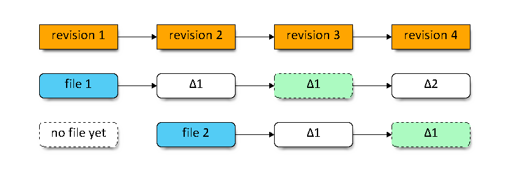
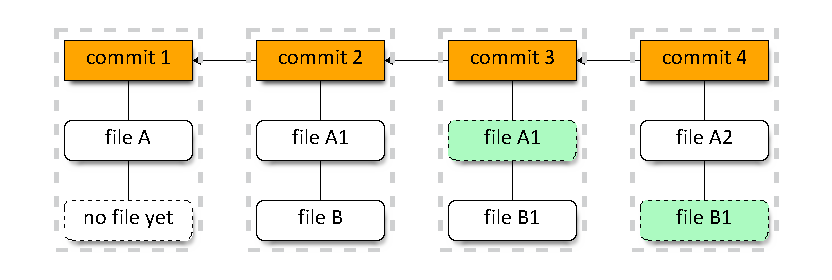
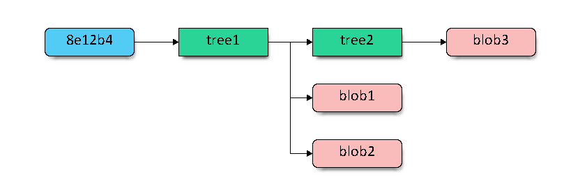
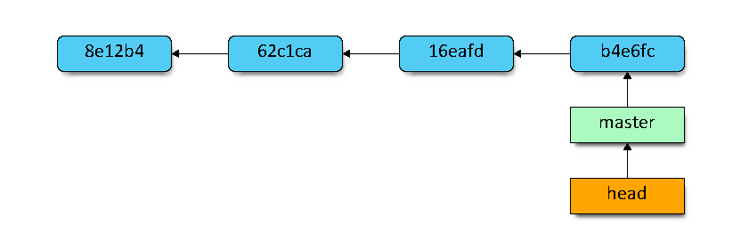
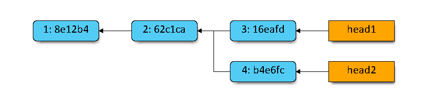
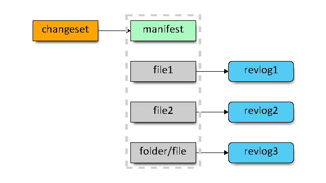

Git workshop
Adam Parchimowicz
SVN, apart from being centralized, has a couple important characteristics:
- stores changesets in deltas
- poor branching model
- dead simple
Rough representation of SVN and Mercurial storage model

Rough representation of Git storage model

Branching model.
- In SVN branch is just a folder copy
- Git has lightweight local branches and tracking branches
- Mercurial has annotated branches and bookmarks
Merging changes between branches - ever tried this in SVN?
Branch merging in SVN is a nightmare. In Git and Mercurial it just works!
Subversion (SVN)
|
Mercurial (Hg)
|
Git
|
| svn add |
hg add |
git add |
| svn blame |
hg blame |
git blame |
| svn cat |
hg cat |
git show |
| svn checkout |
hg clone |
git clone |
| svn commit |
hg commit ; hg push |
git commit -a ; git push |
| svn delete/remove |
hg remove |
git rm |
| svn diff |
hg diff |
git diff, git diff --cached |
| svn help |
hg help |
git help |
| svn log |
hg log |
git log |
| svn revert |
hg revert |
git checkout -f |
| svn status |
hg status |
git status |
| svn update |
hg pull --update |
git pull |
| svn move/rename |
hg move/rename |
git mv |
| ? |
hg backout |
git revert |
Source: http://blogs.atlassian.com/2012/02/mercurial-vs-git-why-mercurial/ + edits
Git theory
One important fact - GIT is DAG.

Git's commit is an object that points to its tree. This tree itself points to other trees or blobs.

Git's repo is a bunch of objects and pointers:
- head and branch are pointers
- commit is an object that points to its parents

In Git a commit is identified by a SHA1 of its contents and parent(s). Therefore it is immutable.
The same applies to all Git's objects. This makes up for great consistency!
Rewriting history
- You can ammend last commit.
- Rebase instead of merging.
- Interactive rebase power!
Repo:

git reset b4e6fc

Reflog still has a pointer!

git branch branch2 273a31

Git powertools:
- stash
- reflog
- cherrypick
- bisect
- rebase -i
Behold the power of reset!

Edit file

Stage

Commit

git reset --soft

git reset

git reset --hard

Mercurial - strengths and weaknesses
Key differences in commits structure:
- anonymous heads (no branch pointers)
- named branches
- no octopus merge

- flat manifest file
- manifest entry points to a revision in revlog
- revlog stores all file's revision
- revlog's index shows revision's length and offset

In Mercurial each file is stored in a single revlog file (+index file).
Building file revision - log(1):
- finding a revision info in index
- reading length and offset in revlog
- adding up a few deltas
- A changeset and revlog entry is identified by a SHA-1 string (called nodeid).
Revlogs are append only.
- Basic history edition - hg rollback undoes last operation (i.e. commit or pull).
This cannot be undone...
- hg commit --amend since mid-2012
Apart from global SHA-1 nodeid, each changeset has a sequential local revision id.
This does not propagate cross-repo and can be different for each user...
MQ extension: index and "history edit":
- adds index-like feature
- many queues support for storing patches
- allows for patches versioning
- until patch in queue is commited you can edit, rearrange etc.
- commands have less switches - clearer doc
- tutorials sub-par comparing to the free git-book
- documetnation and tutorials for plugins / extensions has low quality